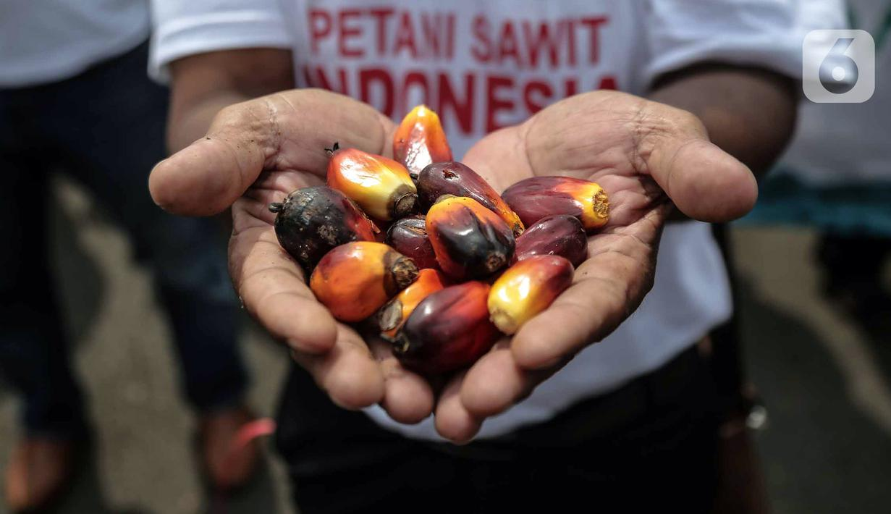

Harga Beli Sawit Jeblok 50%, Petani Teriak Minta Jokowi Cabut Larangan Ekspor!
Jakarta - Para petani kelapa sawit mendesak pemerintah Presiden Joko Widodo untuk segera mencabut larangan sementara ekspor kelapa sawit. Petani mengeluh harga tandan buah segar (111S) kelapa sawit anjlok setelah adanya larangan ekspor.
"Seluruh organisasi petani sawit SPKS, FORTASBI. ASPEKP1R, POPSI dan Sri tnentinta Presiden Joko Widodo untuk mencabut laningun sementara ekspor CPO", kata Para petani dalam keterangan bersama. dikutip Selasa (17/5/2022).